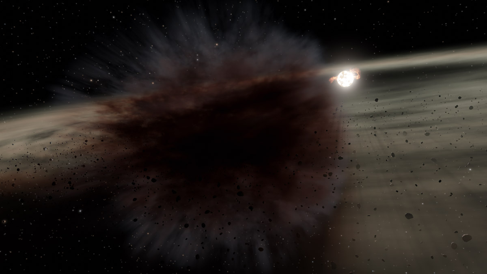

An artist's illustration depicting a collision among so-called planetesimals, or precursor bodies from which planets eventually form. Image Credit: ESA/NASA/M. Kornmesser
An artist's illustration depicting a dark cloud of dust debris created by the aftermath of a violent collision. Image Credit: NASA/JPL-Caltech
UANews: Star-sized debris cloud from distant collision spotted by NASA telescope
NASA JPL Press Feature: NASA Spots Giant Debris Cloud Created by Clashing Celestial Bodies, March 18, 2022
Other Related Reports:
Research Paper: A Star-sized Impact-produced Dust Clump in the Terrestrial Zone of the HD 166191 System, publisehd by the Astrophysical Journal.
Other Related Papers: